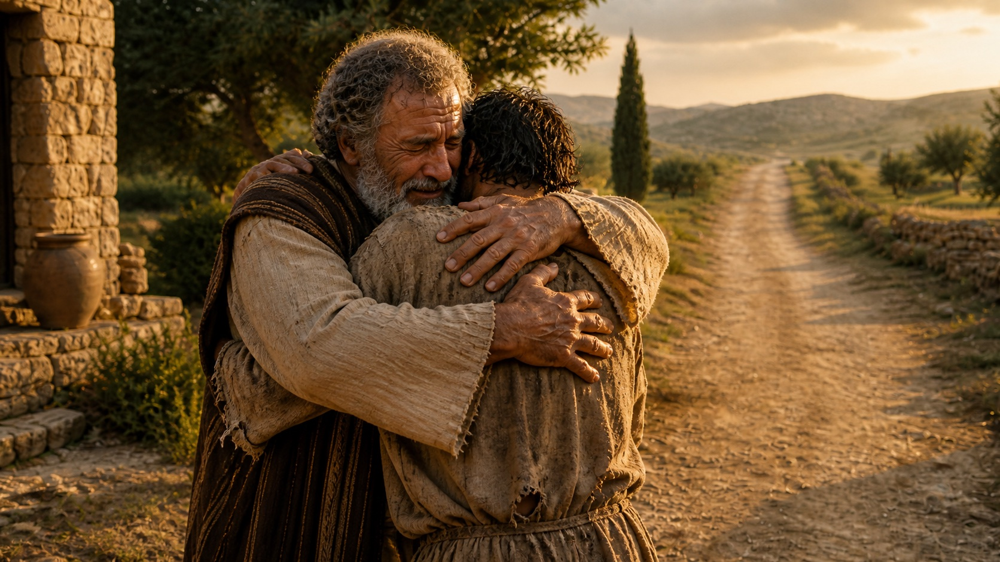
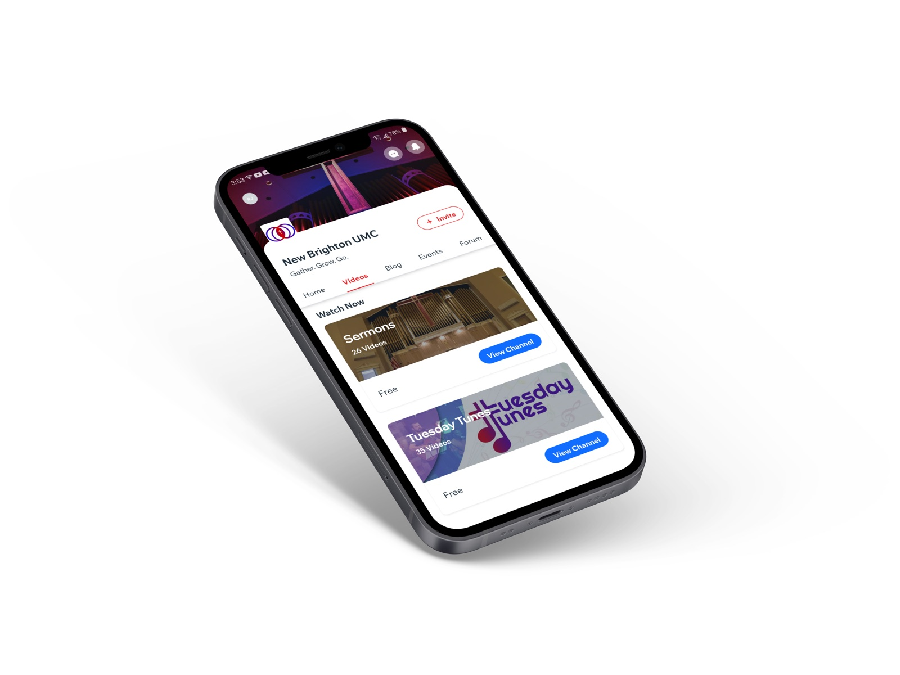
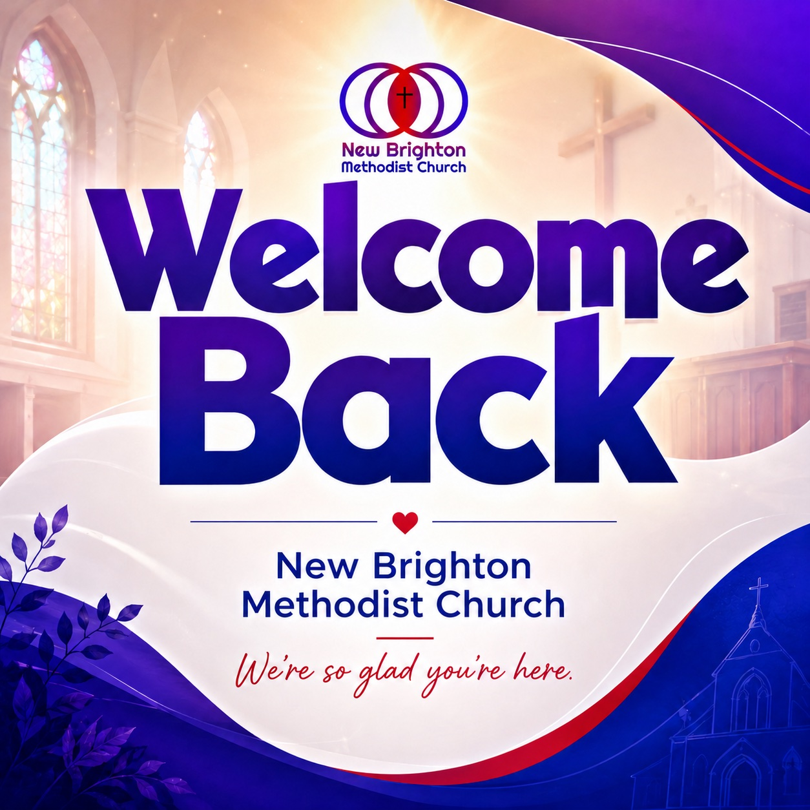
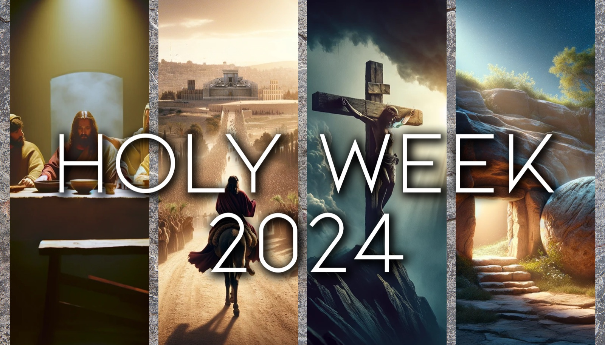
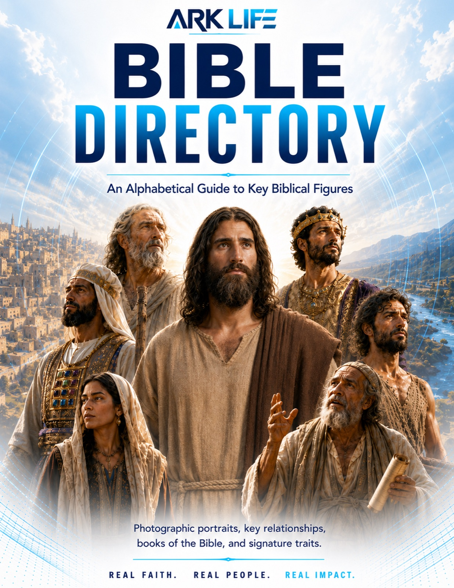
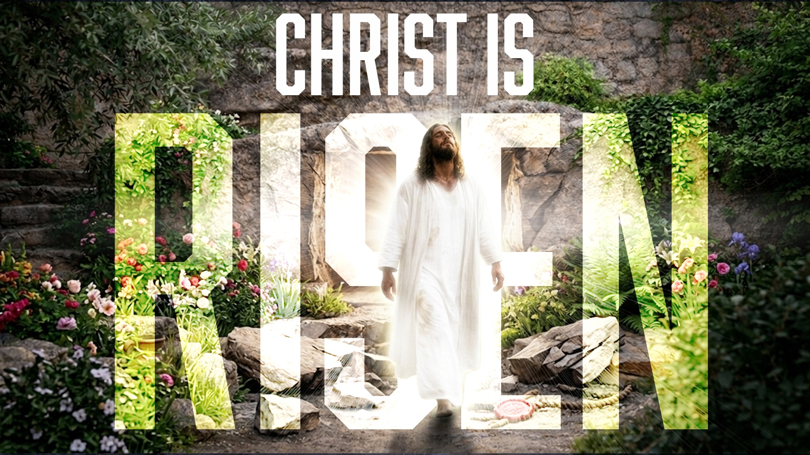
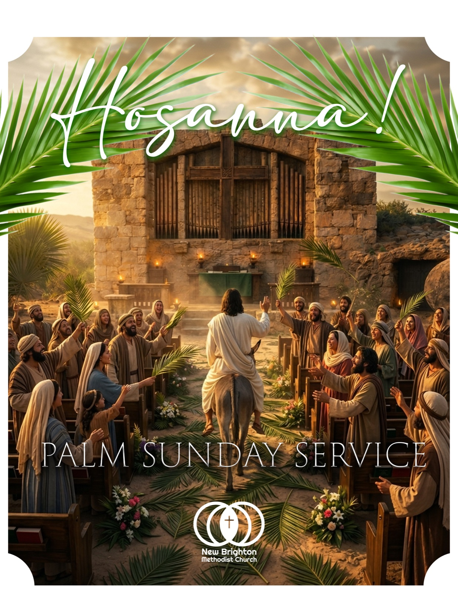
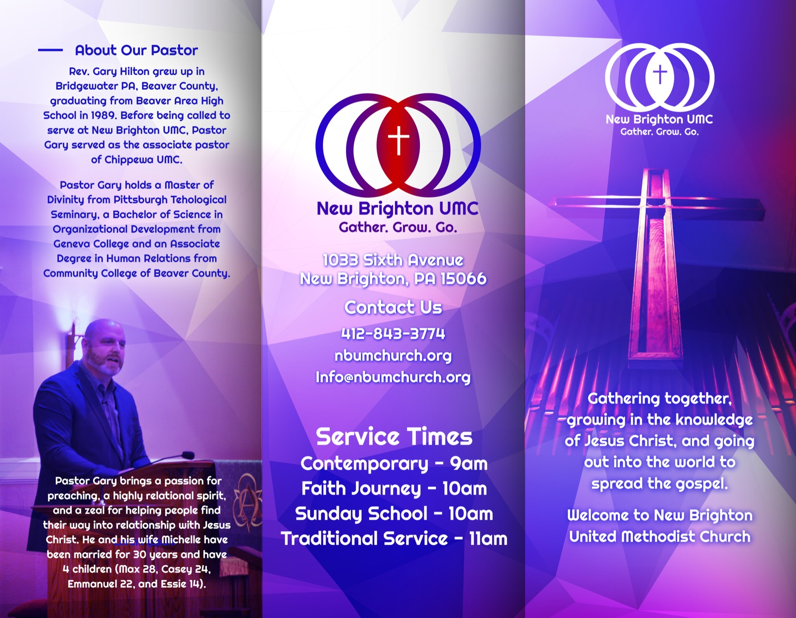
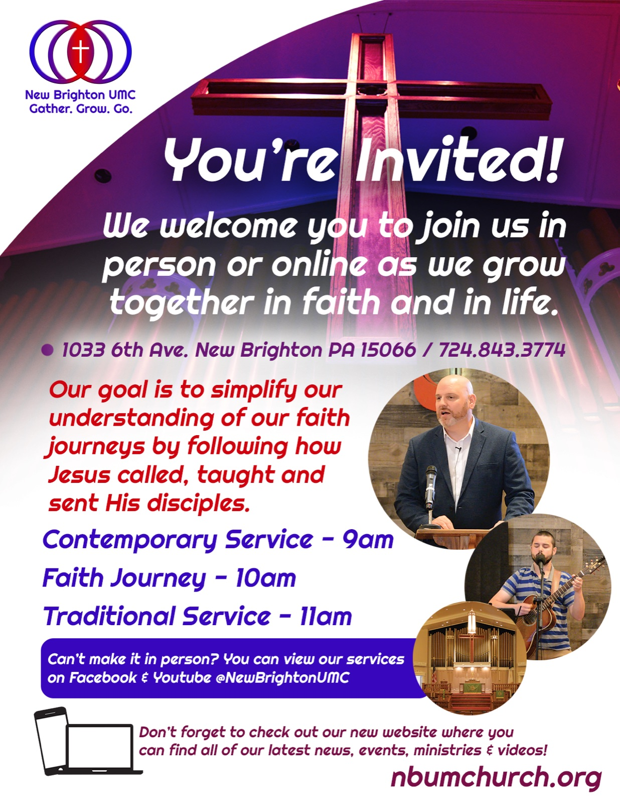

Content Engines
Sermon clips, devotionals, newsletters, social posts, graphics, and publishing calendars shaped around your church voice.
Technology with wisdom, clarity, and care
We help churches, nonprofits, and ministry leaders build simple systems for content, communication, automation, and AI-powered creativity without losing the human heart of ministry.
What we build
Sermon clips, devotionals, newsletters, social posts, graphics, and publishing calendars shaped around your church voice.
Practical workshops that teach pastors, staff, and volunteers how to use AI with discernment, safeguards, and better prompts.
Intake forms, follow-up sequences, volunteer reminders, event promotion, and content handoffs that reduce weekly admin load.
Websites, landing pages, email journeys, and ministry campaigns designed to move people from online attention into real connection.
Examples from real ministry work
A sample wall of ministry assets: teaching graphics, worship slides, campaign posters, digital products, brochures, and app concepts that show what a modern ministry content system can produce.









AI for ministry
The goal is not to chase every new tool. The goal is to help your team communicate more clearly, plan more calmly, and make meaningful content with less friction.
Turn a sermon, class, or study guide into social posts, email copy, short video outlines, discussion questions, and volunteer-ready design briefs.
How we get started
We map your ministry goals, current tools, content rhythm, team capacity, and pain points.
We design a simple stack for AI, content, website, automations, and team training.
We create the site, workflows, prompt library, content templates, and launch materials.
Your team gets training, documentation, and a sustainable plan for weekly execution.
"The best ministry technology disappears into the background so people can be seen, served, and invited into deeper discipleship."
One-on-one coaching
Meet over Zoom or, for churches in the Pittsburgh area, schedule an onsite visit. We will look at your current tools, your team capacity, your content needs, and your ministry goals, then shape a practical plan that fits the way your church actually works.
Schedule coachingStart small, build wisely
We will help you choose the right first project, whether that is an AI content workflow, a better website, a volunteer system, or a full digital ministry plan.